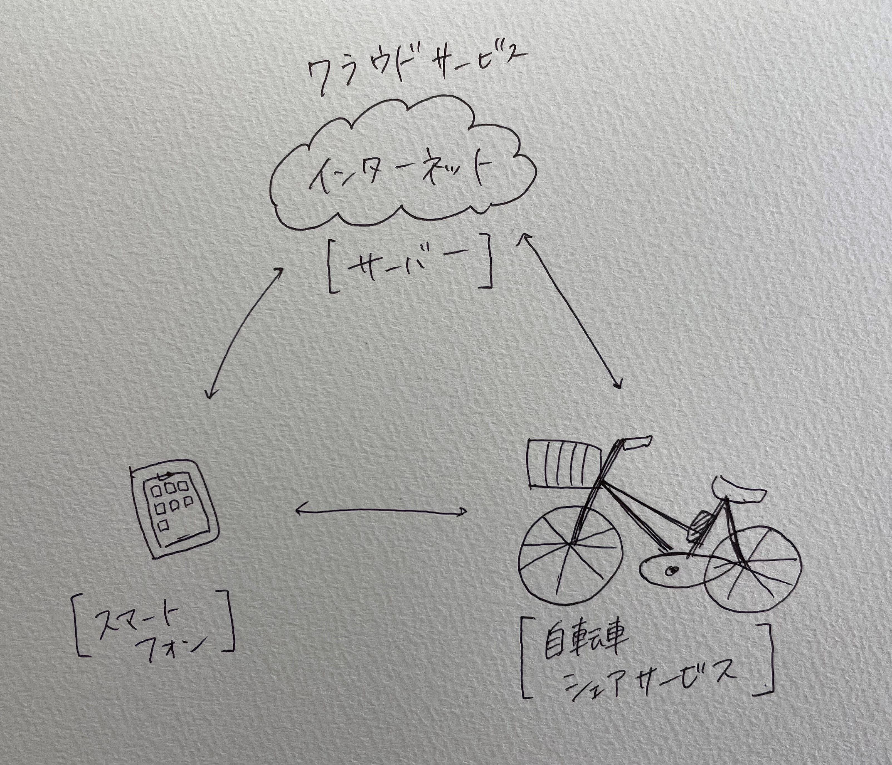
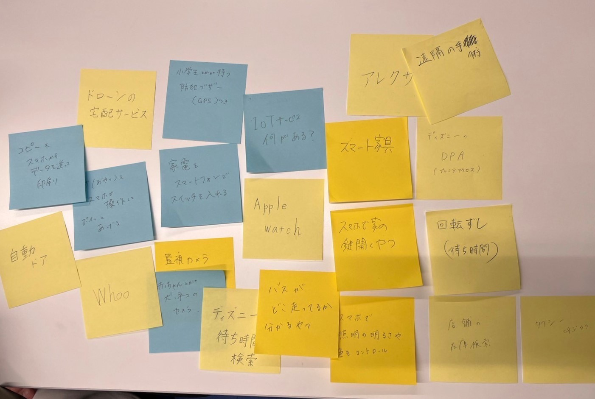
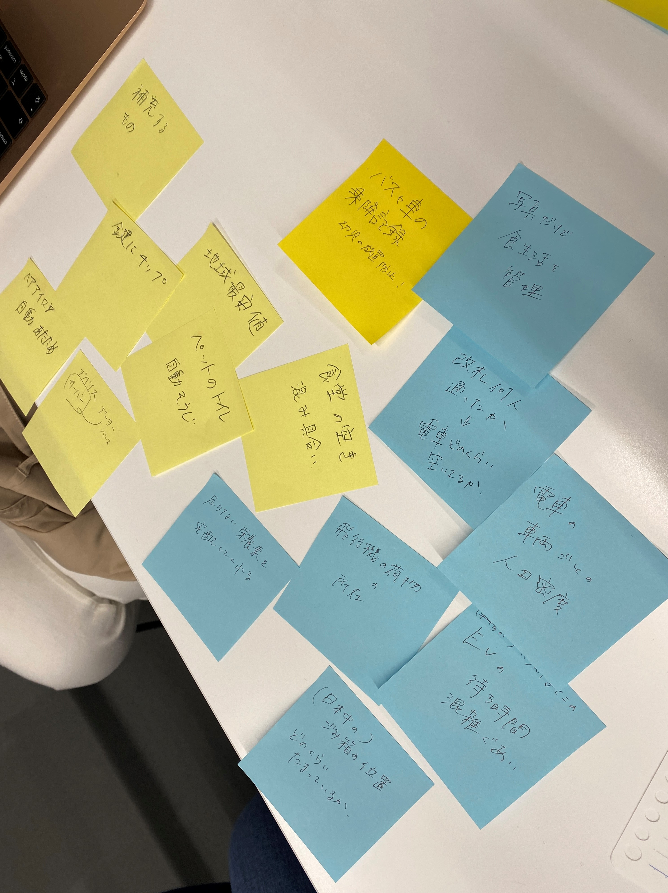
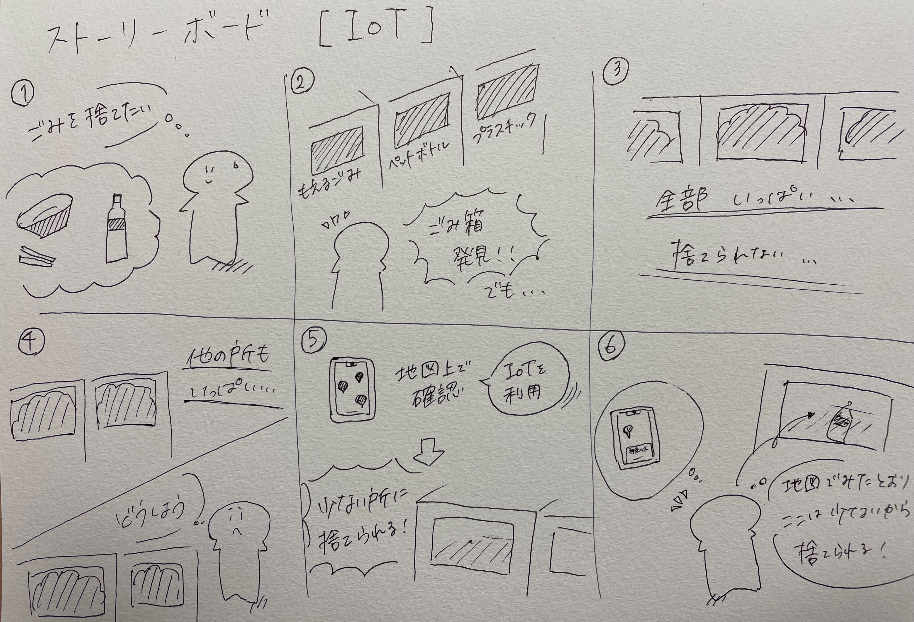

IoTサービス
IoTとは何か
IoTとは、Internet of Things のことで、物とインターネットを接続し、ネットワークを通じてサーバーに接続することで、様々なサービスにつなげることができる。 
グループワークででた身近なIoT製品（ポストイット）↓

IoTでできることは？
グループワークによる案（ポストイット）↓

この中から「ごみ箱にIoTによる管理ができたらどうか」についてのストーリーボード↓
ストーリーボード
